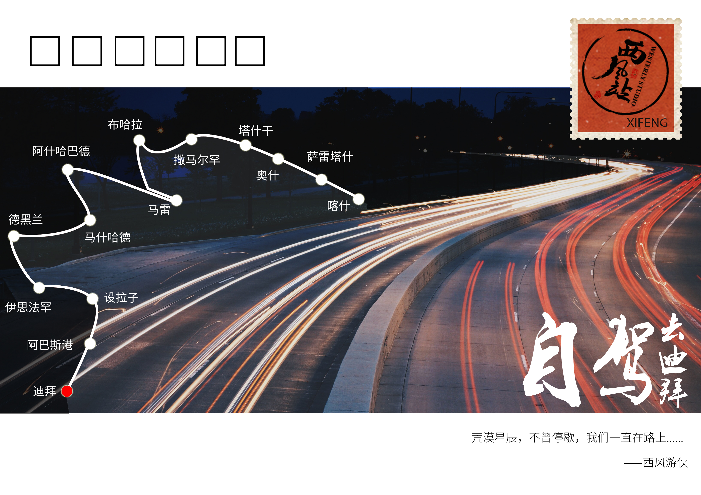

正文: 9.14号更新
我们终于，终于，终于，开到迪拜啦！！！！！
当我今天
穿过这世界的集市
我并不想这么快就跨过
神手掌上一条美丽的掌纹
如果我的眼睛无法证明
一切都是我心爱的神
——哈菲兹《今天》
我们的车轮印由德黑兰一路南延到沙迦，一如波斯大诗人哈菲兹在诗歌中流露出对俗世的眷念，行程至此，我并不想这么快度过。
敲下这段文字间，酒店的外窗像是一面LED显示屏：重复播放着这座不夜城的奢华和迷离。
可以，这很迪拜。
然而这热闹和我并无关系，连日的奔波让我甚至感到了一丝乏味。点上一根烟，脑海中慢慢解构这几日散乱搁置的记忆。
嗯，记忆是个好东西。
还是从伊朗说起吧~
有人说，伊朗是一个充满悲剧历史和灿烂文化的国家。现在在国际上也被某超级大国所孤立，实际上很大程度上是被大家所误解，因为伊朗人从来都是快乐而自豪的。
了解过历史的朋友都知道，世界四大文明古国，古中国，古巴比伦，古印度，古埃及。而古巴比伦所在的两河流域正是现在的波斯湾沿岸。
它曾被阿拉伯人侵略，也遭受过战火洗礼，
那在公元前被亚历山大大帝烧毁的波斯波利斯宫；
但他们也有自己的骄傲，
波斯人开拓世界的时候，美国人还没走进片印第安人的土地；
波斯人航海全世界的历史，可以与西班牙葡萄牙人相媲美；
其实仔细想想和我们天朝自古以来也有许多相似之处，文明古国总是会惺惺相惜。
这个国家的人36年都没有喝过酒，想想都觉得心疼。因为自伊朗革命之后国家就禁酒了。
但是我总觉得，文明古国的人尤其需要喝酒，就像我们中国人的酒文化源远流长。
醉里挑灯看剑，梦回吹角连营，
横生出一股子豪气与痛快，
给波澜的历史画卷再撒上一波浓烈的酒香。
曾今看到过这样的一张照片，这是一个孤儿院的孩子，她在地板上画了个妈妈，想象着，在妈妈温暖的怀抱里睡着了。这是伊朗女艺术家拍的一家伊拉克孤兒院的场景，令无数人心碎。渴望爱，渴望妈妈温暖的怀抱，在渴望中，她渐渐睡去。
许多人以为中东就是战乱的代名词，在个别地区确实存在，然而在伊朗，也许并不是你想象的那样。
孩子们见到来自东方的面孔会主动与你合影，而当我们见到这位从神似奥黛丽赫本的波斯美女时，就一切尽在不言中了。
要知道在伊朗可以说到处都是美女，但是非常难伺候，真的是像小公举一样，在这里按照教义可以娶四个老婆，但是登记在册的只能有一个，因为女婿每天早晚还要给丈母娘打两次电话问候，如果四个都要打的话那每天基本不用做别的事情了，都在和各位丈母娘煲电话粥。一句话来形容吧——
男人负责赚钱养家，女人负责貌美如花。
当你真正的走在这里的街头，
这些伊朗人从那些新闻头条里，
放下枪，放下核弹，走了出来，
形成了伊朗人的群像，
没有纷争与暴乱，是祥和，是安宁。
让那些固有的刻板偏见，统统见鬼去吧。
愿风裁取每一粒尘埃
愿一切浩瀚都归于渺小
愿每身孤独都拥抱共鸣
愿衣襟带花
愿岁月风平
也许若干年后年你问我在伊朗都经历了什么，
我会说里海的与世无争。
荒原的风沙，和当地人可爱的微笑。
沉睡在哈菲兹陵下的诗魂
窗外夜色更浓，记忆中色彩开始悦动
流光溢彩——设拉子
当我从清真寺来到酒肆，不要恣意指摘——
说教之辞太枯燥，何不畅饮这陈年洒浆。
心儿啊！假若明天象今天这样欢乐，
生活该多么有意义，多么令人向往。
——哈菲兹《温煦柔和的东风》
什么样的温柔乡可以诞生这样浪漫的诗人？
只有设拉子。我们一行人也在晚间参观了哈菲兹陵，非常接地气的做了一回设拉子人，在传统餐厅用餐，去当地人家里拜访，感受这个城市的古典与浪漫。
设拉子的粉色清真寺
每当上午的阳光穿过彩色玻璃窗，光线就会变成彩色
而彩色的光带投射到彩色的地毯上，流光溢彩
在繁复的伊斯兰艺术之中杀出一条血路
有效抵抗了各种伊斯兰世界的审美疲劳
琉璃钟，琥珀浓，小槽酒滴真珠红
波斯湾的惊鸿一瞥，绕路又何妨？
从设拉子到阿巴斯港，本可以抄近道，但我们为了离海边更加近一些，我们选择走了一条长达580公里的远路。不过为了波斯湾的惊鸿一瞥，这点路还是很值得的。
行到水穷处，坐看云起时。
不过有时候玩过头了也容易出事儿……在海边倒车的时候不小心撞到一辆摩托车，居然还把后排空调所在的保险杠撞破了，没办法只能把它给关了。
就是那几个大窟窿，陪了我们这么久的座驾，也是心疼……
阿巴斯与沙迦的海天之歌
海自潮汐，爱自来去。
通向迪拜的最后一重关卡，不是荒原与沙漠，
而是一片海。
嘿，兄弟，有这样的感觉吗？当你打一个游戏打到了最后一关，和最终BOSS面对面的那种心情，一定体会过吧，既兴奋又有点不忍心这么快结束。
来吧，最后的关卡
前一天花了一整天的时间在海关搞定坐船的手续，经历了搞错港口代码、走人和走货的混淆等不顺，但最后还是按时上了船。
结果这是个混装船，条件十分艰苦，底下装车装货，上面坐人，所以……
没有标间，没有卧铺，连床也没有！只有这种类似公共汽车上的座位……
要坐整整12个小时，幸好船上人不多，基本每个人可以占三个位置，那就躺着看看电影咯，放的是《速度与激情6》还有另外一部成龙大哥的电影。
至于吃的，那可想而知，肯定难吃，可是车队里有人说了“有的吃总比没的吃好”，最终的boss关卡，过得的确没那么舒服。
想起在船上和伊朗船员们聊天，他们说很想推翻自己的政府，着实吓了一跳。
以前看过知乎上一个知友说的，以前哈佛校长的一个故事，萨默斯说男生比女生更加适合做科学家，因为男生的智力正态分布比女生要扁一些，就是男生在两端的延伸更长，因此称为极端人群（也就是科学家或是白痴）的概率更高。他后来校长就没得做了……
世界上出格的事大抵都是极端人群做的，所以我们去到任何地方都会说，大部分的人民都是热情友好的，主要问题就是那少数人。而伊朗就应该是一个中庸的地方，是一个方差小的曲线，出不了那少数人。在海上，也许思维总是会开阔一些吧。
就像阳光下的这对老人，当画面定格，
美的就像画一样。
6000公里，当这一天真的来临
很遗憾，当我们下船的时候，
没有鲜花，没有仪仗队
但是有一个特殊待遇，那就是扣留……
我们的车辆在下船后被“扣留”3天，因为他们的酋长刚从杭州G20峰会回来，才决定了宰牲节的放假日期，很不巧，这几天，海关人员都不上班。
所以就出现了很尴尬的一幕：我们人出来了，车子却还被扣着……要三天以后才能提
虽然给我们带来了一点小麻烦，但一切和中国有接连的事物（G20），不知怎的，都会有种归属感和亲切感。
回望东方，一路西行途径的国度，或生活俭朴、民风淳朴，或风光旖旎、热肠古道。更多的是落后和贫苦，而我此刻停驻的地方，却像是《魔兽世界》里的古尔丹打开了黑暗之门，由荒原进发到了更为现代的部落。完全是都市的气息，虽然高楼的百米开外全然是一片荒寂的沙土，这里的人们生活的更像是在云端之上、在天堂，而比较昨日途径的那些地域，更像是部落，原始而纯真。
来到迪拜，梦想的目标点。车队的所有人都十分兴奋，或者说我们回归了习惯，在钢铁水泥雕刻的丰富里隐匿自我，过活人生。短暂的兴奋后，我更多的是怀念，怀念离天堂仅隔一尺外的大漠国土，在那里，似乎野性的生命更加蓬勃。
后来许多人问我一个人夜晚踟蹰路上的心情，我想起的却不是孤单和路长，而是波澜壮阔的海和天空中闪耀的星光。
记忆被晚风吹醒，回到眼前，城市依然没有要睡去的迹象。原来所有的磨砺与艰险尽头，都是行云流水般的此世光阴。
你好，迪拜
——————————————抵达迪拜分割线———————————————
9月7号更新
行程汇报：车队已经抵达伊朗
我们先接着上回说，上次在马雷的梅尔夫遗址看到了最美的夕阳。后面又继续到了阿什哈巴德，找到了传说中的汗血宝马。
据史书记载，西汉时期，张骞出西域，归来说：“西域多善马，马汗血。”故在中国，两千年来这种马一直被神秘地称为：“汗血宝马”。
我们赶到了阿什哈巴德的种马场，有幸见到了西域的汗血宝马。
到现在，这个西域只能指土库曼斯坦了，因为土库曼斯坦是唯一留存有汗血宝马的国家，而且全国也仅存有三千匹左右，分布在四个种马场内。
“古人相马不相皮，瘦马虽瘦骨法奇，世无伯乐良可嗤，千金市马唯市肥”。
——欧阳修《相马》
到现在，这个西域只能指土库曼斯坦了，因为土库曼斯坦是唯一留存有汗血宝马的国家，而且全国也仅存有三千匹左右，分布在四个种马场内。
汗血宝马非常珍贵，从几百美金到一万五千美金不等，有时价格会更高。导游说，那种金色的、长脖子的最为珍贵。
好不容易来一次，当然要骑一下汗血宝马，感觉还是非常棒的！
但使龙城飞将在，不教胡马度阴山！
白色之城
在大概傍晚的时候，我们抵达了阿什哈巴德市区，一进市区，这是一座名副其实的白色大理石之城。所有建筑都被伊朗产的白色大理石覆盖，洁白明亮，气势恢宏，看起来极像总统府！
从土库曼出来就是伊朗了，伊朗关口的时候真的非常麻烦……
而且这里跟大家普及一下，在伊朗，他们的国定假日是周四下午和周五全天，所以周四下午一点半到两点才下班已经算是很敬业了……所以当时还是有一点点的懵逼，excuse me?
我到达那里的时候是十点半，而且要在三个小时内把所有的东西办好。更可怕的是，我们的导游没有提前到……这不耽误工夫么……
不过好在咱们中国人真是遍布世界哈哈哈！在关口，碰到了咱们大天朝新华社一个车队。
老司机带带我！
原来他们昨天就已经抵达了这里，因为这个非常繁琐、难办的手续，在海关附近过了一夜。在接近四十个小时的接洽之后，他们才拿到了出关的手续……
40个小时……呵呵呵呵，那我们是不是也要在这里过一夜才行？
还好，多个朋友多条路。我们的伊朗这边的朋友也赶到了海关帮助我们，他们对这里也相对比较熟悉。于是所有的手续都加急完成，虽然价格高一些，毕竟可以省下大量的时间。
在旅途中，你永远也无法知道后面的路会有什么突发情况，很多时候我们都是见招拆招，不过面对这种未知的挑战也是一种乐趣，不是吗?
就在我们从土库曼斯坦出关的当天，我们来到了伊朗的马什哈德。
正所谓，富人去麦加朝圣，穷人去马什哈德朝圣
除了麦加，这里是穆斯林心目中的另外一个超级圣地，不像麦加朝圣时间集中在12月，这里一年四季都有大量朝圣的穆斯林。于是在周四下午6点进城的我们就悲惨了!
当时，大量穆斯林从城外涌进城内，准备周五的朝圣，而城内则是魔都式的下班高峰，我们就在城门口堵了将近2个小时，真是不巧！！！
下面是第二天游览马什哈德的图片。
未完待续......
-------------------------------------------------------第二次更新-------------------------------------------------------------------
9.2号更新
行程汇报：目前车队已经抵达土库曼斯坦
这个国家根本就是中亚的朝鲜啊！！这网络信号真是醉了啊！！！
终于到了个能上网了的地方了啊……更新几张最新的图片吧
PS：原始答案里面有几张图片居然没有显示出来，现在添上去了，大家可以看下。
前天在乌兹别克斯坦参加他们的国庆日活动~
骚气的我

这是在土库曼斯坦的马雷，是一个绿洲城市，图片中这个圆顶的建筑是桑贾尔苏丹陵。
奇葩的是，这个梅尔夫国家历史和文化公园，没有门票，没有围墙，没有入口，没有工作人员，连厕所都没有！！！
看了大家的评论，谢谢大家支持，想加入我们的可以私信我加微信~因为以后我也会规划其他的自驾线路，比如东南亚或者俄罗斯，也一直在寻找志同道合的伙伴。
下一站我们马上要到伊朗境内了，网络情况应该会好一些，也会继续更新的。
——————————————第一次更新分割线———————————————
此刻正在乌兹别克斯坦的布哈拉，昨天刚开了300多公里从撒马尔罕到这里，今天休整一天。把车队的大家都安顿好之后，正好有空静下来写点东西。
 回到题目上面，自驾旅行了二十年，并不是说旅行使我改变了什么，而是一次一次的旅行让我更加明白了自己想要的是什么，想成为什么样的人。
回到题目上面，自驾旅行了二十年，并不是说旅行使我改变了什么，而是一次一次的旅行让我更加明白了自己想要的是什么，想成为什么样的人。所以，与其说旅行改变了我，不如说旅行塑造了现在的我。
我叫王伟，是个80后，在中国有成千上万个王伟，相信你的身边也一定有个伟哥……把我扔到大街上可能几秒钟就被忽视了。也可能正是因为这样，我不太喜欢人多的地方，喜欢去那些人烟稀少人迹罕至的地方玩，最重要的是开着自己的越野车。
插一句，特别喜欢郝云《活着》里面的一句歌词：我那可怜的吉普车，很久没爬山也没过河，我在心里悄悄许下愿望，带它去蒙古国。
西藏阿里，“圣湖”玛旁雍错 2015.6.20
从小就喜欢上地理课，喜欢地球仪，也就种下了不安分的种子，记得上大学那会儿，就想着想去离家远一点儿的地方，于是一下子跑到离家两千多公里的外地去上学，专业也是旅游管理（旅管的小伙伴让我看到你们的双手！）
毕业之后就顺理成章的去旅行社工作，就顺着工作去了不少的地方，后来觉得还是不够自有，就开始自己创业了，做的当然也是旅游方面的东西。
大概是六年前吧，有了自己的第一辆车。于是就开始了自驾游，如果说以前旅行对我来说只是爱好的话，那么从这个时候开始，
旅行真正融入到了我的骨子里改变了我，说的矫情一点就是血里有风吧……
2010年我开始自驾游，先是周边小大小闹，后来就和很多前辈一样直接开进西藏，开进新疆。在高原和荒漠上转了好几圈，碰到过很多人很多事。混迹知乎也蛮久了，一说到西藏就有很多话题是说穷游西藏（尤其是那种文艺青年妹子想去穷游的）各种乱七八糟的事情，我对此也不做什么评论……可能因为我是个大老爷们而且又是自己开车，所以也就没有这种困扰。
西藏冈嘎，远眺珠峰 2015.6.20
至于说在这个世界第三极旅行，有没有什么净化心灵改变自己的作用，我觉得多少有点扯。可能我的注意力都在车子上了，这不是什么周末去个郊区自驾，这里特么都是无人区啊……万一车子有问题那可不是开玩笑的。
记得以前看过一篇关于旅行的文章，深有感触，比如去那些热门的景区旅行是个什么体验？丽江，大理，凤凰什么的……
究竟是丽江的生活如意到可以给人安慰，还是那里的生活更狼狈，让人感念原来自己的生活很美好。
“大理还是那个样子，穷游的小年轻和大妈团各成一色，作流浪状的街头艺人或许换了几茬，但面色冷峻不减当年；女人们戴着花环，穿着三不五时就会踩到裙摆的长裙，身着沙发巾样式的披肩，手持着淘宝9.9的自拍杆；男人戴上彩色的圆形墨镜，花费一小时让路边的手艺人在手臂上描绘一次性纹身……
所有人好像都进入到了一个磁场，隔绝了过往的生活，努着劲儿把最夸张最浓艳的自我从身体里挤出来，在旅行密集的安排中曝光天下。这或许可以称之为旅行人格，在平日里压抑的，躲闪的，平庸的部分自我被隐藏其后，我们一定要做点什么不一样的、出格的事，好像只有这样才不虚此行。
——选自ONE《如果生活不如意》大将军郭
说回来，所以不喜欢去那些文艺范儿的地方。在西藏和新疆转了几圈之后，觉得还不够过瘾。
去年意大利米兰开世博会，一个在意呆利的朋友说要不要来看看，
怎么去？开车去！！
然后和一帮志同道合的朋友在准备了数月之后就真的上路了：
中国——哈萨克斯坦——格鲁吉亚——土耳其——希腊——意大利
一路自驾开过去，历时一个多月，将近一万公里。
在魔都有车有房也有家，但还是想要出去走走，好在家人也很支持我。
当时的女朋友，现在的妻子。
就是这样的一次旅程，让我彻底对境外自驾游中了毒，自己从上海开车到意大利米兰，这说出去逼格还是挺高的吧？
路程不详述，就po几张路上印象比较深的照片吧。

哈萨克斯坦阿拉木图-巴尔喀什路上，偶遇瑞典双腿残疾人自驾游世界，简单聊天，互送祝福 2015.9.22
在伊斯坦布尔和意大利，非常考验大家的驾驶和跟车技术。好在我们是中国车牌，大多数国家的人们都礼让我们车队。
路上遇到各种各样的事儿，加油站的4岁就移民的“中国”大妈，俄罗斯腹地的成吉思汗后代的后裔，伊斯坦布尔当地农村的婚礼；路途中的奇遇记非常有意思。
在经过土耳其中部一个小山村的时候，正好碰见当地人举办婚礼，正是集体跳舞唱歌的高潮时刻，十分受感染，受邀参与其中，无奈还要赶路。
阿斯塔纳 当地蒙古族哈萨克族美女笙歌载舞 欢迎入城 2015.9.24
在格鲁吉亚关口，遇到一位瑞士大叔，从瑞士自驾到香港，开着一辆早已停产的路虎卫士。
2015.10.01
每到一个国家，有机会的话就和遇见的人打个招呼握一下手，说一句你好。选出来几张特别有代表性的几张。
哈萨克斯坦一路开道+护送的当地警察 2015.9.30
谁说只有俄罗斯是战斗民族？？！老毛子的邻居各个都不是吃素的！这位哈萨克警察叔叔一路飙车带我们飞……

俄罗斯“士兵”，其实是当地小伙子身着士兵服游玩 2015.9.30

清真寺祷告的小朋友 2015.9.24
米兰世博园中国馆的女翻译，上海小姑娘 2015.10.20
我觉得旅行，对于有些人来说，
没有别的，就是血里有风
天生来自远方，
来自黄昏与清晨。
来自十二重高天的好风清扬，
飘来生命气息的吹拂，在路的尽头，盘桓未来。
说到这里，可能会有些朋友觉得离题了，但我觉得旅行给我的改变就是一次一次的比从前的自己更加坚定。也有人可能会问你这样疯狂的出境自驾，那么多的花费哪里来的？其实我也说实话，现在这就是我的职业，带着很多也有这个冲动和梦想的人一起上路。把爱好变成职业，变成工作。以前看过澳大利亚旅游局招聘大堡礁的看护员，说是全世界最幸福的职业，其实弱弱的说我的职业也不比他的差，哈哈哈。
对了，最开始的时候我说我现在在乌兹别克斯坦，没错，今年我依然在路上。而且，和去年的路线不太一样，今年我要开到土豪之城——迪拜……
我是8.21号正式出发的，从新疆喀什，伊尔克什坦口岸出关。
对了，说到这张图片，戴帽子的那个是我，而后面那个是我们同行的伙伴。这个题目其实更加适合他来回答，他本身是一个外科医生，收入稳定，就是喜欢自驾游，辞了职出来，能不能改变人他就是个活生生的例子。
我们的车队。
出了新疆之后，直接进入的就是吉尔吉斯坦斯坦。

跳广场舞的吉尔吉斯坦大妈，其实这就是前两天刚拍的照片。
之后是乌兹别克斯坦。里约奥运会刚刚结束，我们就在这里偶遇了他们国家的奥运代表团，别看只有区区几个人，还是拿了两块金牌两块银牌的呢。
这都是在乌兹别克斯坦的塔什干拍的。
在大使馆里面装逼，哈哈哈哈
之后在撒马尔罕短暂停留之后，我们就来到了现在的位置——布哈拉。
美吧~
偶遇一对新人婚礼。
截至目前，我们行程已经将近1530公里，完成了总路程的25%，距离迪拜还有四千多公里。
回到问题，总结一下，其实旅行，离开我们熟悉的生活的地方，去未知的地方。外面的世界不会更美好的哪里去，也不会太悲惨，这里也是最真实的生活，我们用最百分百的热情去感受外面的世界，而回去之后，晒完照片，回复掉朋友圈的留言，生活还是要继续。（好浓的鸡汤）
就先写到这吧，洗洗睡了，明天还要接着赶路。